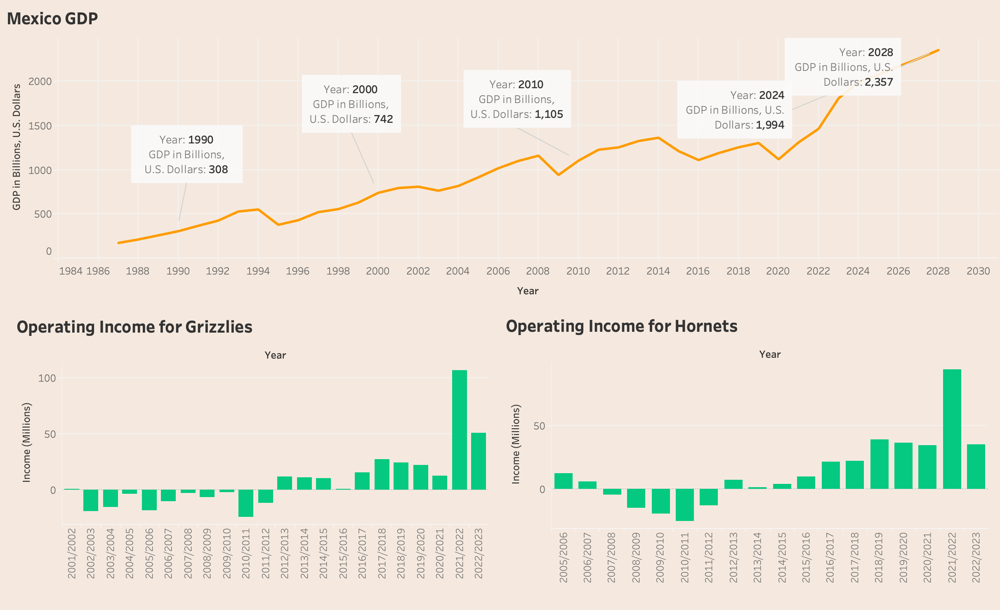
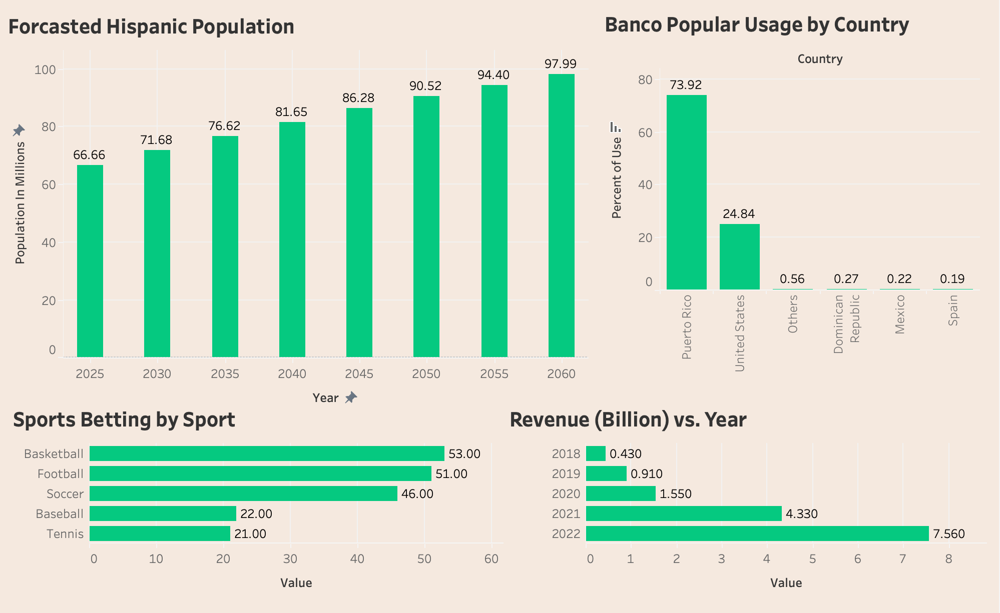
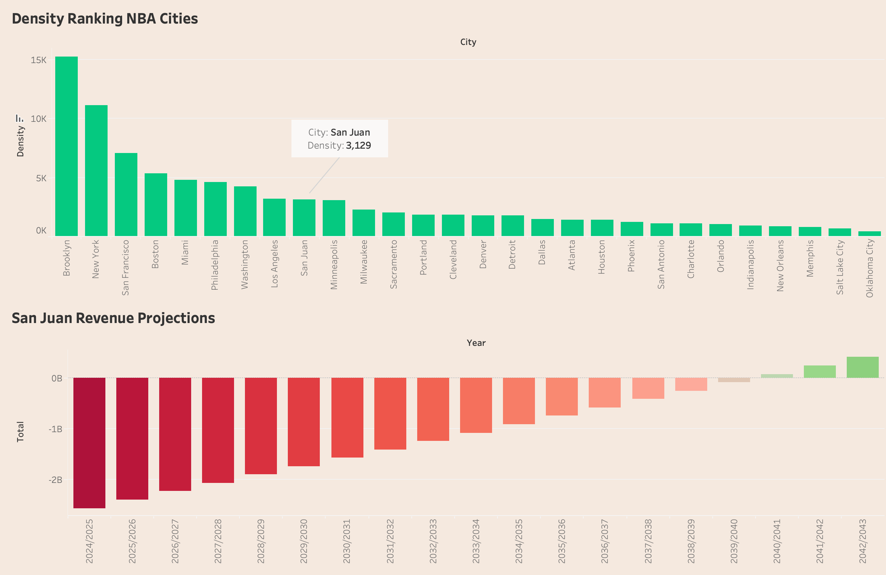

Smith Analytics Consortium 5th Annual Datathon
I worked in a team of five to compete in a fifteen-day long datathon during the Spring 2024 semester. This datathon was hosted by the Smith Analytics Consortium (SAC) in collaboration with Deloitte. The goal of the datathon was to propose cities for a new NBA team, and my team chose Mexico City and San Juan as the top two potential cities.
To predict Mexico's GDP, we used machine learning (linear regression) using this formula: SUM([GDP in Billions, U.S. Dollars]). We graphed the predictions to visually represent the previous and predicted GDPs in billions.
We visualized data related to predicted Hispanic population, revenue, sports betting, and popularity of our sponsor, Banco Popular, to support our choices.
When looking at cities that watch the NBA, we found that Puerto Rico had a fairly high density. We also forecasted the potential revenue for San Juan if it were to have an NBA team and found that by 2041, the revenue is projected to be positive.